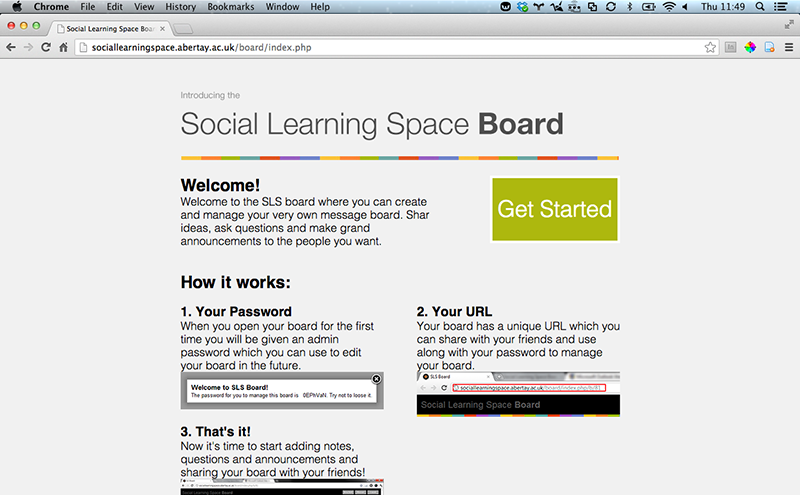

SLS Board
Share Ideas

What is SLS Board?
The SLS Board allows you to create and manage boards to share ideas, ask questions, and make announcements.
First Steps
- Go to SLS Board.
- Click on Get Started.
- Copy the generated password and close the modal window.
Features
- Easy to learn and use.
- Can share ideas with people.
- Creates an easy way to interact with people.
- Allows viewers to respond to posts.
- Easy management system.
How to Use
Add a Note
- Click on New Note at the top of the page.
- Write in the message you would like displayed.
- Select Note, Question, or Announcement from the drop down.
- Click on the Create button
Reply
To reply to a note, question, or announcement, click the reply link on the item.
Edit or Delete
To edit or delete a post on the board, select the edit or delete link on the item.
Manage Board
You can delete the board, or update the boards password by selecting the Manage button at the top of the board.
How to Share
To share the board with people, copy the link from the address bar and send it to whoever you would like to be a part of the board.